Hands-on Introduction to R 2023
- Introduction: what is data analysis and R basics
- Data visualization and reporting
- Data transformation 1: extract, summarize
- Data transformation 2: join, pivot
- Data cleansing and conversion: numbers, text
- Data input and interpretation
- Statistical modeling 1: probability distribution, likelihood
- Statistical modeling 2: linear regression
https://heavywatal.github.io/slides/english2023r/
Extending linear regression

Linear Model (LM) — #7 yesterday
    ↓ probability distribution
Generalized Linear Model (GLM) üëà #8 today
    ↓ individual difference, random effect
Generalized Linear Mixed Model (GLMM)
    ↓ flexible modelling
Hierarchical Bayesian Model (HBM)
データ解析のための統計モデリング入門 久保拓弥 2012 より改変
Straight LM does not fit all
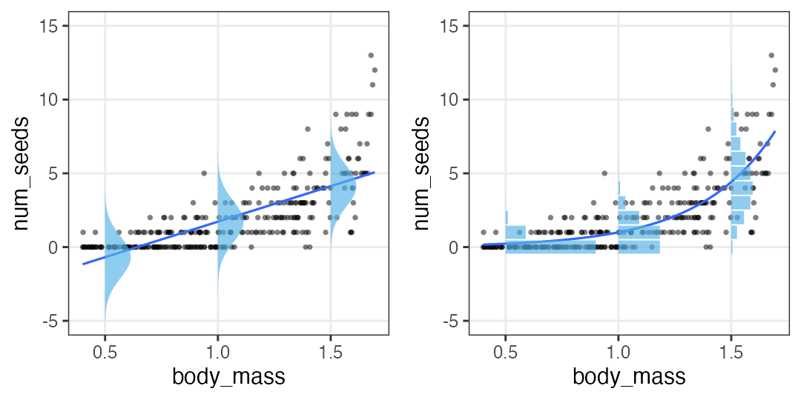- Prediction goes below zero whereas all the observations are positive.
- Y values are integer. Their dispersion is larger when X is larger.
- Let’s learn statistical modelling for better fitting to the data.
Statistical modelling in the previous session
Random variable $X$ follows the probability distribution $f$ with parameters $\theta$.
$X \sim f(\theta) $
e.g., Number of seeds $X$ follows Poisson distribution with mean $\lambda$:

Viewing the same model as GLM
The number of individual $i$’s seeds $y_i$ follows Poisson distribution with mean $\lambda_i$.
Mean $\lambda_i$ is common constant $\beta_0$.

Just separated the equation into two, and flipped X-Y axes…? Why?
The reason may be clearer in a model with explanatory variables.
GLM with one explanatory variable
The number of individual $i$’s seeds $y_i$ follows Poisson distribution with mean $\lambda_i$.
Mean $\lambda_i$ is a linear function of its body mass $x_i$.


simple linear regression with a single explanatory variable ↑
multiple linear regression with multiple explanatory variables →
Multiple regression with multiple expl. variables
\[\begin{split} y_i &\sim \text{Poisson}(\lambda_i) \\ \log(\lambda_i) &= \beta_0 + \beta_1 x_{1i} + \beta_2 x_{2i} + \ldots \end{split}\]
üç∫ Beer sells better on hot and humid days:

Let’s see other probability distributions and link functions →
Logistic regression
- Probability distribution: binomial distribution
- Link function: $\operatorname{logit}(p) = \log \frac {p} {1 - p}$
estimates the probability of event occurrence based on some variables.
$y_i$ in 10 customers ordered beer.
$p_i$ varies by temperature $x_i$.
\[\begin{split} y_i &\sim \text{Binomial}(n,~p_i) \\ \operatorname{logit}(p_i) &= \beta_0 + \beta_1 x_i \\ p_i &= \frac 1 {1 + e^{-(\beta_0 + \beta_1 x_i)}} \end{split}\]
Logistic function ↑
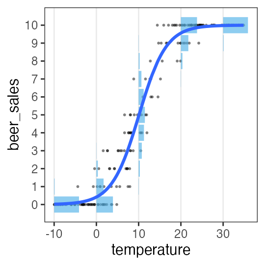
Logistic regression (narrow sense)
- Probability distribution: Bernoulli distribution (binomial with $n = 1$)
- Link function: $\operatorname{logit}(p) = \log \frac {p} {1 - p}$
estimates the probability of event occurrence based on some variables.
Buckets sells better on windy days.
\[\begin{split} y_i &\sim \text{Bernoulli}(p_i) \\ &= \text{Binomial}(1,~p_i) \\ \operatorname{logit}(p_i) &= \beta_0 + \beta_1 x_i \\ p_i &= \frac 1 {1 + e^{-(\beta_0 + \beta_1 x_i)}} \end{split}\]
Logistic function ↑
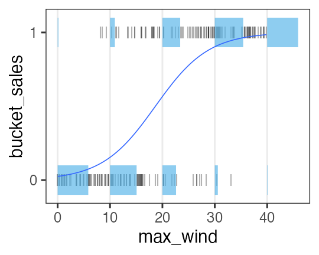
LM is a special case of GLM
- Probability distribution: Normal distribution
- Link function: identity (returns everything unchanged)
\[\begin{split} y_i &\sim \mathcal{N}(\mu_i,~\sigma^2) \\ \text{identity}(\mu_i) &= \beta_0 + \beta_1 x_i \end{split}\]
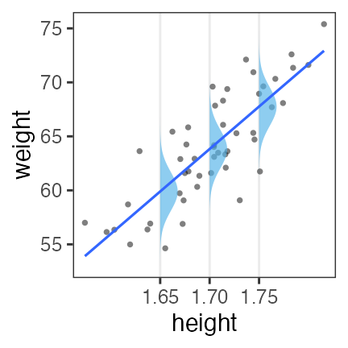
resulting in the same regression line as OLS.
Analysis of variance (ANOVA) as GLM
with qualitative explanatory variables, normal distribution, identity link.
needs conversion to index variables (0 or 1).
| weather | → | $x_1$ ☀️ 晴 | $x_2$ ☔️ 雨 |
|---|---|---|---|
| ☁️ cloudy | 0 | 0 | |
| ☀️ sunny | 1 | 0 | |
| ☔️ rainy | 0 | 1 |
\[\begin{split} y_i &\sim \mathcal{N}(\mu_i,\sigma^2) \\ \mu_i &= \beta_0 + \beta_1 x_{1i} + \beta_2 x_{2i} \end{split}\]
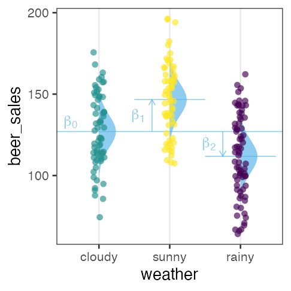
The effects of sunny☀️ $\beta_1$ and rainy☔️ $\beta_2$ are relative to cloudy☁️ $\beta_0$.
GLM supports more flexible modelling with other distribution & link.
Analysis of covariance (ANCOVA) as GLM
with both qualitative and quantitative explanatory variables
assuming normal distribution, homogeneity of variance, identity link.
| weather | → | $x_1$ ☀️ 晴 | $x_2$ ☔️ 雨 |
|---|---|---|---|
| ☁️ cloudy | 0 | 0 | |
| ☀️ sunny | 1 | 0 | |
| ☔️ rainy | 0 | 1 |
\[\begin{split} y_i &\sim \mathcal{N}(\mu_i,\sigma^2) \\ \mu_i &= \beta_0 + \beta_1 x_{1i} + \beta_2 x_{2i} + \beta_3 x_{3i} \end{split}\]
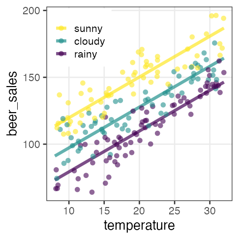
GLM supports more flexible modelling with other distribution & link.
Interaction
The effects of two or more variables are not additive.
e.g., The temperature dependency of beer sales differs by weather.
| weather | $x_1$ |
|---|---|
| ☀️ sunny | 1 |
| ☔️ rainy | 0 |
\[\begin{split} y_i &\sim \mathcal{N}(\mu_i,\sigma^2) \\ \mu_i &= \beta_0 + \beta_1 x_{1i} + \beta_2 x_{2i} + \beta_{1,2} x_{1i} x_{2i} \end{split}\]
☀️ all $\beta$
☔️ only $\beta_0,~\beta_2$ because $x_{1i} = 0$.
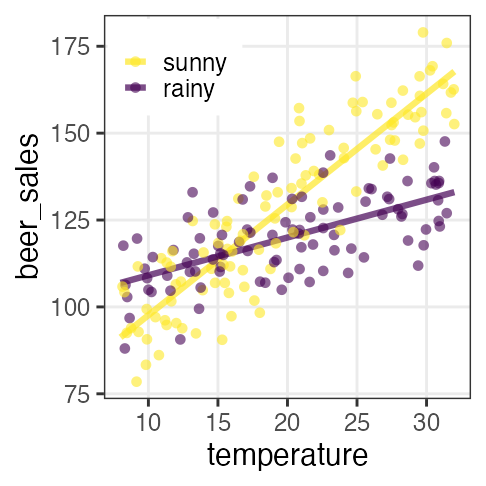
Drawback: it makes interpretation difficult dramatically.
Roundup: Generalized Linear Model (GLM)
supports flexible modelling with various distribution & link.
There are some named (frequently used) combinations.
| Name | Distribution | Link | expl. variables |
|---|---|---|---|
| Poisson regression | Poisson | log | |
| Logistic regression | Binomial | logit | |
| LM | Normal | identity | |
| ANOVA | Normal | identity | qualitative |
| ANCOVA | Normal | identity | qualitative+quantitative |
Link functions
- $\text{identity}(\mu_i) = \beta_0 + \beta_1 x_{1i} + \beta_2 x_{2i} + \ldots$
- $\mu_i = \beta_0 + \beta_1 x_{1i} + \beta_2 x_{2i} + \ldots$
- The effects of expl. variables are additive.
- $\log(\lambda_i) = \beta_0 + \beta_1 x_{1i} + \beta_2 x_{2i} + \ldots$
- $\lambda_i = e^{\beta_0 + \beta_1 x_{1i} + \beta_2 x_{2i} + \ldots} = e^{\beta_0} \times e^{\beta_1 x_{1i}} \times e^{\beta_2 x_{2i}} \times \ldots$
- The effects of expl. variables are multiplicative.
e.g., adding $\Delta x_1$ brings multiplying $e^{\beta_1 \Delta x_{1}}$. - $\operatorname{logit}(p_i) = \beta_0 + \beta_1 x_{1i} + \beta_2 x_{2i} + \ldots$
- $p_i = \frac 1 {1 + e^{-(\beta_0 + \beta_1 x_i + \ldots)}} $ (logistic function)
- The effects of expl. variables are plateaued.
e.g., $\lim_{x \to -\infty} p = 0;~\lim_{x \to \infty} p = 1$
probit, inverse, sqrt, etc. are not covered here.
GLM in R
Almost the same way as with lm:
formula = weight ~ height
fit = glm(formula, data = df_weight)
coef(fit)
(Intercept) height
-69.85222 78.63444
Normal distribution and identity link is selected by default.
Use family= option for modification:
glm(formula, family = gaussian(link = identity), data = mydata)
glm(formula, family = poisson(link = log), data = mydata)
glm(formula, family = binomial(link = logit), data = mydata)
See ?family for more details.
üî∞ Practice of glm()
Express weight as a linear function of height.
n = 50
df_weight = tibble::tibble(
height = rnorm(n, 1.70, 0.05),
bmi = rnorm(n, 22, 1),
weight = bmi * (height**2)
) |>
print()
height bmi weight
1 1.718019 21.55500 63.62151
2 1.782862 22.83775 72.59199
3 1.617464 22.43569 58.69604
4 1.678291 23.37245 65.83231
--
47 1.762930 21.78337 67.70106
48 1.744133 21.47257 65.31960
49 1.730495 19.72866 59.07966
50 1.676496 22.85824 64.24627
Don’t care about interpretation and goodness of fit for now.
üî∞ Practice of glm(), example solution
fit_wh = glm(weight ~ height, family = gaussian(link = identity), data = df_weight)
coef(fit_wh)
(Intercept) height
-69.85222 78.63444
df_fit_wh = modelr::add_predictions(df_weight, fit_wh, type = "response")
ggplot(df_fit_wh) +
aes(height, weight) +
geom_point() +
geom_line(aes(y = pred), linewidth = 1, color = "#3366ff")
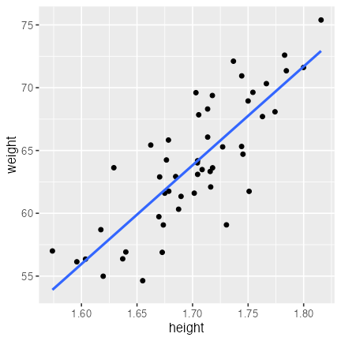
üî∞ Poisson regression üå±
n = 300L
a = 3
b = -3
df_seeds = tibble::tibble(
body_mass = runif(n, 0.4, 1.7),
num_seeds = rpois(n, exp(a * body_mass + b))
) |>
print()
body_mass num_seeds
1 0.9185923 1
2 0.5154446 0
3 1.3362802 4
4 1.6858125 11
--
297 1.3407210 3
298 1.3357421 1
299 0.8928759 0
300 0.4583795 0
üî∞ Multiple regression üç∫
It requires minor tricks with add_predictions() to draw regression lines.
Compromise with “regression points” for now.
n = 200L
true_coef = c(3, 0.05, 0.006)
df_beer = tibble::tibble(
temperature = runif(n, 8, 32),
humidity = runif(n, 20, 80),
beer_sales = rpois(n, exp(true_coef[1] + true_coef[2] * temperature + true_coef[3] * humidity))
) |>
print()
temperature humidity beer_sales
1 17.57401 54.68339 67
2 10.13129 67.34727 55
3 25.28517 40.93855 104
4 31.73808 32.14308 113
--
197 26.28116 41.89173 105
198 23.53532 73.12257 113
199 13.87494 41.92560 51
200 31.60519 61.47984 140
üî∞ Logistic regression (hint on the next page →)
sigmoid = function(x, gain = 1) {1 / (1 + exp(-gain * x))}
nrep = 200L
n = 10L
df_logistic = tibble::tibble(
x = runif(nrep, -10, 35),
logit_p = -3 + 0.3 * x,
p = sigmoid(logit_p),
y = rbinom(nrep, n, p),
response = matrix(c(y, n - y), ncol = 2)
) |>
print()
x logit_p p y response[,1] [,2]
1 7.951271 -0.6146188 0.35100632 4 4 6
2 -6.003840 -4.8011520 0.00815325 0 0 10
3 22.409698 3.7229095 0.97640654 10 10 0
4 34.508895 7.3526686 0.99935953 10 10 0
--
197 24.277180 4.2831541 0.98638875 10 10 0
198 19.128721 2.7386162 0.93926720 8 8 2
199 1.015520 -2.6953441 0.06324865 0 0 10
200 34.259733 7.2779199 0.99930986 10 10 0
Hint for Logistic regression
Two types of response variables can be given to a formula:
- Integer vector: success 1, failure 0 (logistic regression in narrow sense)
- Integer matrix: # of successes in 1st column, # of failures in 2nd column
i.e., giving only # of success (y) results in an error:
glm(y ~ x, df_logistic, family = binomial)
Error in eval(family$initialize): y values must be 0 <= y <= 1
instead, the formula should be response ~ x to include failures as well.
(It also means the number of trials does not have to be constant.)
üî∞ ANCOVA: GLM with qualitative + quantitative vars
First, try ANOVA with only weather, then ANCOVA with temperature.
n = 200L
b = c(70, 3, 20, -20) # true coef
weather_levels = c("sunny", "cloudy", "rainy")
df_ancova = tibble::tibble(
temperature = runif(n, 8, 32),
weather = factor(sample(weather_levels, n, TRUE), levels = weather_levels)
) |>
dplyr::mutate(name = weather, value = 1L) |>
tidyr::pivot_wider(values_fill = 0L) |>
dplyr::select(!cloudy) |>
dplyr::mutate(mu = b[1] + b[2] * temperature + b[3] * sunny + b[4] * rainy) |>
dplyr::mutate(beer_sales = rnorm(n, mu, 10)
) |>
print()
temperature weather sunny rainy mu beer_sales
1 23.377217 cloudy 0 0 140.13165 129.36288
2 26.043088 cloudy 0 0 148.12926 138.26966
3 30.830351 cloudy 0 0 162.49105 141.46190
4 15.022311 cloudy 0 0 115.06693 108.18593
--
197 8.277514 cloudy 0 0 94.83254 74.38321
198 28.675228 rainy 0 1 136.02568 140.34777
199 27.310881 rainy 0 1 131.93264 122.31587
200 24.064285 sunny 1 0 162.19286 144.89368
üî∞ Interaction
n = 200L
b = c(70, 3, 100, -2) # true coef
weather_levels = c("sunny", "rainy")
df_interact = tibble::tibble(
temperature = runif(n, 8, 32),
weather = factor(sample(weather_levels, n, TRUE), levels = weather_levels)
) |>
dplyr::mutate(name = weather, value = 1L) |>
tidyr::pivot_wider(values_fill = 0L) |>
dplyr::mutate(mu = b[1] * sunny + b[2] * temperature + b[3] * rainy + b[4] * temperature * rainy) |>
dplyr::mutate(beer_sales = rnorm(n, mu, 10)) |>
print()
temperature weather rainy sunny mu beer_sales
1 23.377217 rainy 1 0 123.37722 116.2995
2 26.043088 rainy 1 0 126.04309 133.9018
3 30.830351 rainy 1 0 130.83035 130.6798
4 15.022311 rainy 1 0 115.02231 117.5620
--
197 8.277514 sunny 0 1 94.83254 104.2573
198 28.675228 sunny 0 1 156.02568 155.3134
199 27.310881 rainy 1 0 127.31088 131.0297
200 24.064285 sunny 0 1 142.19286 142.8241
One data, many possible models
How can we choose?
- Based on underlying mechanisms
- Poisson if count data, Gamma if interval data, from Poisson process.
- Binomial if proportional count like “k in n times”.
- Visualize the data, and choose one with similar shape.
- Normal distribution if symmetric
- Gamma if always positive
- straight, exponential, plateaued, etc.
There should be some measures for goodness-of-fit…
Likelihood: a measure for goodness-of-fit
The probability to observe the data $D$ given the model $M$.
$\Pr(D \mid M)$
Likelihood function is the same probability from different viewpoints:
- as a function of model $M$ given the data $D$,
$L(M \mid D)$ - as a function of parameters $\theta$,
$L(\theta \mid D)$ or $L(\theta)$
Compare maximum likelihood of competing models:
$\log L^* (M_1) \text{ vs. } \log L^* (M_2) \text{ vs. } \log L^* (M_3) \ldots$
broom::glance(fit)
null.deviance df.null logLik AIC BIC deviance df.residual nobs
1 1305.043 49 -124.9298 255.8597 261.5957 433.2606 48 50
The better fit, the higher likelihood
OK, makes sense in this case:
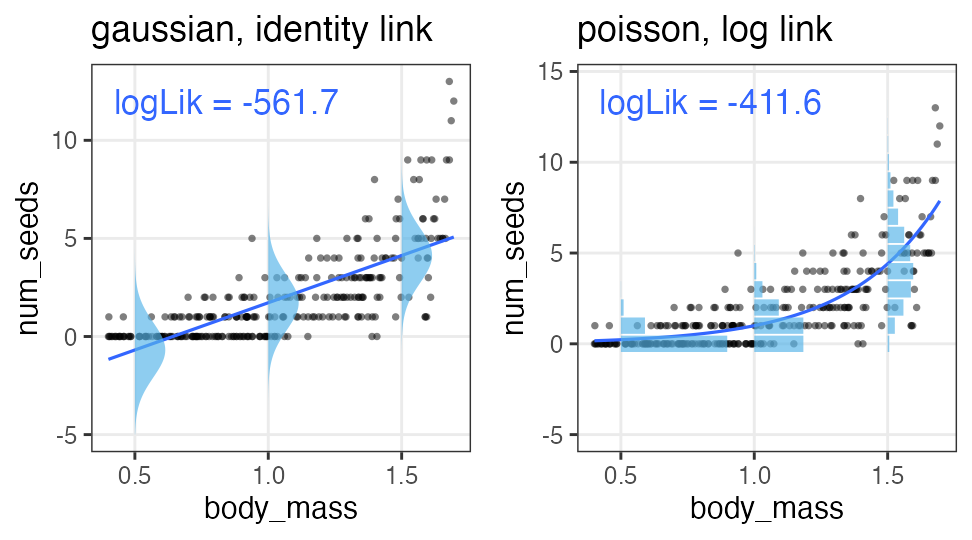
Should we continue searching for models with higher likelihood?
Higher likelihood by adding a useless parameter
The number of seeds $y$ increases with the increasing body mass $x$.
Adding a variable $x_2$, sox color of the observer, improves likelihood……?
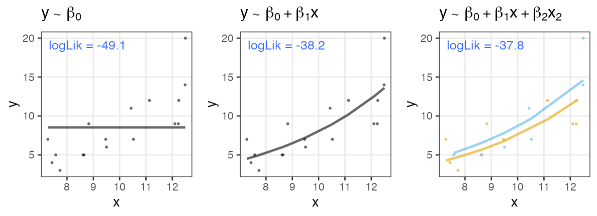
Best fit model does not fit for our purpose
- Overfitting
- Too many parameters leads to fitting too closely to the dataset.
→ poor generalization on unseen data
→ useless for prediction and understanding
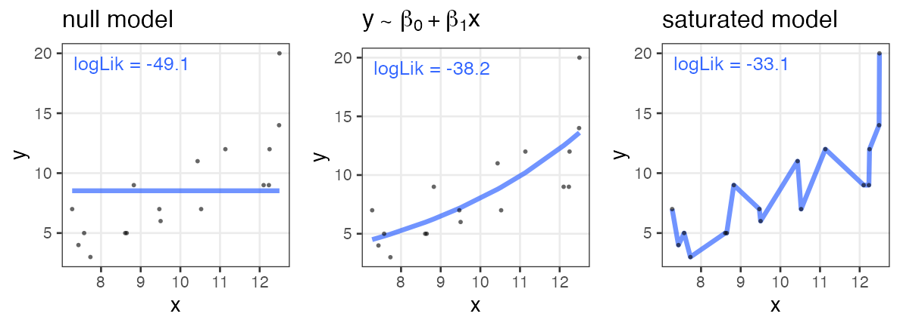
null model: only intersect; without explanatory variable.
saturated model: # parameters ≥ # data points; just like connecting points.
AIC: Akaike Information Criterion
\[\begin{split} \text{AIC} = -2 (\log L^* - k) = -2 \log L^* + 2k \end{split}\]
- The model with the minimum AIC is preferred
- higher likelihood $L$.
- smaller number of parameters $k$
- Goodness of fit to which data?
- $\log L^*$ is for the given dataset.
- $(\log L^* - k)$ is the unbiased estimate of mean log likelihood to the future data generated by true mechanism. (derived from Kullback–Leibler divergence)
broom::glance(fit)
null.deviance df.null logLik AIC BIC deviance df.residual nobs
1 1305.043 49 -124.9298 255.8597 261.5957 433.2606 48 50
Higher AIC by adding a useless parameter
The number of seeds $y$ increases with the increasing body mass $x$.
Adding a variable $x_2$, sox color of the observer, brings larger AIC.

Other information criteria
- $\text{BIC} = -2 \log L^* + k \log n$
- Similar to AIC: penalizes for parameters $k$.
- Different from AIC: depends on sample size $n$.
(AIC lacks penalty by sample size.) - (derived from maximization of marginal likelihood)
- WAIC and WBIC
- Widely Applicable variants of AIC and BIC.
- WAIC for better prediction. WBIC for identifying the true model.
Model selection by information criteria
does not select the “right” one;
selects useful one for prediction and understanding.
All models are wrong, but some are useful. — George E. P. Box

Pitfalls and notes
- Multicollinearity:
- Correlated explanatory variables cause problems.
- Variable transformation should be avoided:
- Log transformation is often useful, though.
- Divided numbers are dangerous.
- Interaction makes interpretation difficult dramatically.
Steps to Generalized Linear Model (GLM)
- Above all, visualize the data to get a whole picture.
- Select variables, probabitlity distribution, and link function.
- Estimate parameters.
- Compare models with information criteria.
penguins dataset
https://allisonhorst.github.io/palmerpenguins/

install.packages("palmerpenguins")
library(palmerpenguins)
penguins_colors = c(Adelie = "darkorange", Chinstrap = "purple", Gentoo = "cyan4")
print(penguins)
penguins dataset
https://allisonhorst.github.io/palmerpenguins/
species island bill_length_mm bill_depth_mm flipper_length_mm body_mass_g sex year
1 Adelie Torgersen 39.1 18.7 181 3750 male 2007
2 Adelie Torgersen 39.5 17.4 186 3800 female 2007
3 Adelie Torgersen 40.3 18.0 195 3250 female 2007
4 Adelie Torgersen NA NA NA NA NA 2007
--
341 Chinstrap Dream 43.5 18.1 202 3400 female 2009
342 Chinstrap Dream 49.6 18.2 193 3775 male 2009
343 Chinstrap Dream 50.8 19.0 210 4100 male 2009
344 Chinstrap Dream 50.2 18.7 198 3775 female 2009
Remove rows with missing values first
penguins |> dplyr::filter(dplyr::if_any(everything(), is.na))
species island bill_length_mm bill_depth_mm flipper_length_mm body_mass_g sex year
1 Adelie Torgersen NA NA NA NA NA 2007
2 Adelie Torgersen 34.1 18.1 193 3475 NA 2007
3 Adelie Torgersen 42.0 20.2 190 4250 NA 2007
4 Adelie Torgersen 37.8 17.1 186 3300 NA 2007
--
8 Gentoo Biscoe 46.2 14.4 214 4650 NA 2008
9 Gentoo Biscoe 47.3 13.8 216 4725 NA 2009
10 Gentoo Biscoe 44.5 15.7 217 4875 NA 2009
11 Gentoo Biscoe NA NA NA NA NA 2009
penguins_dropna = penguins |> tidyr::drop_na(body_mass_g)
dim(penguins_dropna)
[1] 342 8
üî∞ Practice GLM with penguins
Try doing by yourself first. Example code follows.
- Plot with
x = body_mass_g,y = flipper_length_mm. - Get the slope and intersect with simple linear regression, and plot it.
- Color-code points with
species. - Perform multiple regression with additional
species, and plot it. - Apply the same analysis to bill shapes.
Simple regression: 1. Plot data
The heavier body, the longer flipper.
p_penweight = ggplot(penguins_dropna) +
aes(body_mass_g, flipper_length_mm) +
geom_point(shape = 16, alpha = 0.66) +
theme_bw(base_size = 20) +
theme(panel.grid.minor = element_blank())
p_penweight

Simple regression: 2. Fit
Use normal distribution and identity link by default. $y = 136.7 + 0.0153 x$
fit1 = glm(flipper_length_mm ~ body_mass_g, data = penguins_dropna)
broom::tidy(fit1)
term estimate std.error statistic p.value
1 (Intercept) 136.72955927 1.996835406 68.47312 5.712947e-201
2 body_mass_g 0.01527592 0.000466836 32.72223 4.370681e-107
broom::glance(fit1)
null.deviance df.null logLik AIC BIC deviance df.residual nobs
1 67426.54 341 -1145.518 2297.035 2308.54 16250.3 340 342
Simple regression: 3. Plot the fitting result
Draw the regression line with the predicted values.
added1 = modelr::add_predictions(penguins_dropna, fit1, type = "response")
p1 = p_penweight +
geom_line(aes(y = pred), data = added1, linewidth = 1, color = "#3366ff")
p1
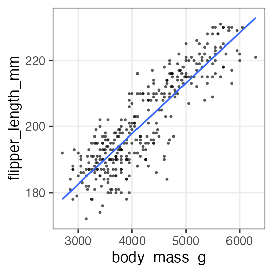
Multiple regression: 1. Plot data
Color-code points by species.
p_penweight_color = p_penweight + aes(color = species) +
scale_color_manual(values = penguins_colors)
p_penweight_color

Multiple regression: 2. Fit
Chinstrap and Gentoo have longer flippers compared to Adelie.
The effect of body mass is smaller than that of simple regression (0.0153).
fit2 = glm(flipper_length_mm ~ body_mass_g + species, data = penguins_dropna)
broom::tidy(fit2)
term estimate std.error statistic p.value
1 (Intercept) 1.588603e+02 2.3865766963 66.564071 2.450113e-196
2 body_mass_g 8.402113e-03 0.0006338976 13.254686 1.401600e-32
3 speciesChinstrap 5.597440e+00 0.7882166229 7.101398 7.334777e-12
4 speciesGentoo 1.567747e+01 1.0906590679 14.374308 6.800823e-37
broom::glance(fit2)
null.deviance df.null logLik AIC BIC deviance df.residual nobs
1 67426.54 341 -1059.718 2129.437 2148.611 9839.073 338 342
Multiple regression: 3. Plot the fitting result
added2 = modelr::add_predictions(penguins_dropna, fit2, type = "response")
p2 = p_penweight_color +
geom_line(aes(y = pred), data = added2, linewidth = 1)
p2

slope may vary by species. Let’s try adding interaction to the model.
Interaction: Fit
Chinstrap has larger slope than the others.
Now it is difficult to interpret the difference in intersects.
fit3 = glm(flipper_length_mm ~ body_mass_g * species, data = penguins_dropna)
broom::tidy(fit3)
term estimate std.error statistic p.value
1 (Intercept) 165.244812649 3.5508916651 46.536146 1.561669e-148
2 body_mass_g 0.006676867 0.0009522935 7.011354 1.301783e-11
3 speciesChinstrap -13.863939075 7.3012647809 -1.898841 5.844186e-02
4 speciesGentoo 6.059375933 6.0508813200 1.001404 3.173522e-01
5 body_mass_g:speciesChinstrap 0.005228197 0.0019486293 2.683013 7.657147e-03
6 body_mass_g:speciesGentoo 0.002362269 0.0013525781 1.746494 8.163897e-02
broom::glance(fit3)
null.deviance df.null logLik AIC BIC deviance df.residual nobs
1 67426.54 341 -1055.711 2125.422 2152.265 9611.166 336 342
Interaction: Plot the fitting result
added3 = modelr::add_predictions(penguins_dropna, fit3, type = "response")
p3 = p_penweight_color +
geom_line(aes(y = pred), data = added3, linewidth = 1)
p3

Which is the best of three?
According to AIC, “multiple regression with interaction” is the best.
labels = sprintf("AIC = %.1f", AIC(fit1, fit2, fit3)$AIC)
cowplot::plot_grid(p1 + labs(title = labels[1]),
p2 + labs(title = labels[2]) + theme(legend.position = "none"),
p3 + labs(title = labels[3]) + theme(legend.position = "none"), nrow = 1L)

Additional practice
üî∞ Repeat the same steps with different data: bill length and depth.
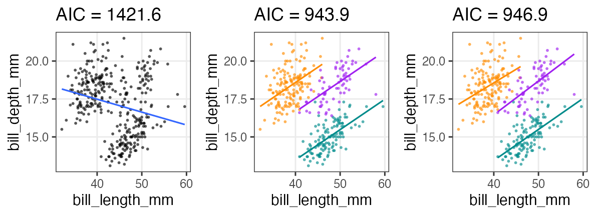
üî∞ Final challenge: Analyze public datasets
- e-Stat: 政府統計の総合窓口
- data.go.jp データカタログサイト: 中央省庁
- BODIKオープンデータカタログサイト: 地方自治体
- 気象庁
- DATA.GOV: U.S. Government’s open data
- anything else.
You have developed skills for data analysis
- Setup computer environment ✅ day 1
- Get and read input data ✅ day 6
- Exploratory data analysis
- Preparation (harder than it seems) ✅ day 3–5
- Visualization, generating hypotheses (fun!) ✅ day 2
- Statistical analysis, testing hypotheses ✅ day 7–8
- Report ✅ day 2

Purposes of this hands-on lectures
✅ Every biological research involves data and models
✅ You want to do reproducible analysis
✅ Learn how to do it and how to learn more
✅ Glance at the basics of data analysis
You don’t have to remember every command.
Just repeat forgetting and searching.
Reference
- R for Data Science — Hadley Wickham et al.
- https://r4ds.hadley.nz, Paperback, 日本語版書籍
- Official documents:
- tidyverse, ggplot2, dplyr, tidyr, stringr, readr
- データ解析のための統計モデリング入門 久保拓弥 2012
- データ分析のための数理モデル入門 江崎貴裕 2020
- 分析者のためのデータ解釈学入門 江崎貴裕 2020
- 統計学を哲学する 大塚淳 2020
- ÁßëÂ≠¶„Å®„É¢„Éá„É´—„Ç∑„Éü„É•„ɨ„ɺ„Ç∑„Éß„É≥„ÅÆÂì≤Â≠¶ ÂÖ•ÈñÄ Michael Weisberg 2017
(原著: Simulation and Similarity 2013)